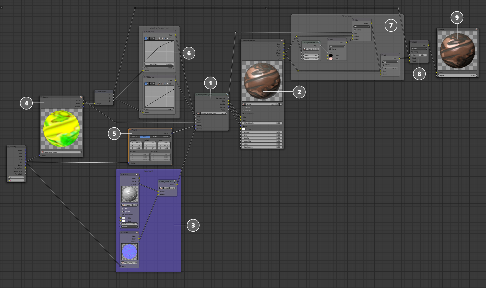
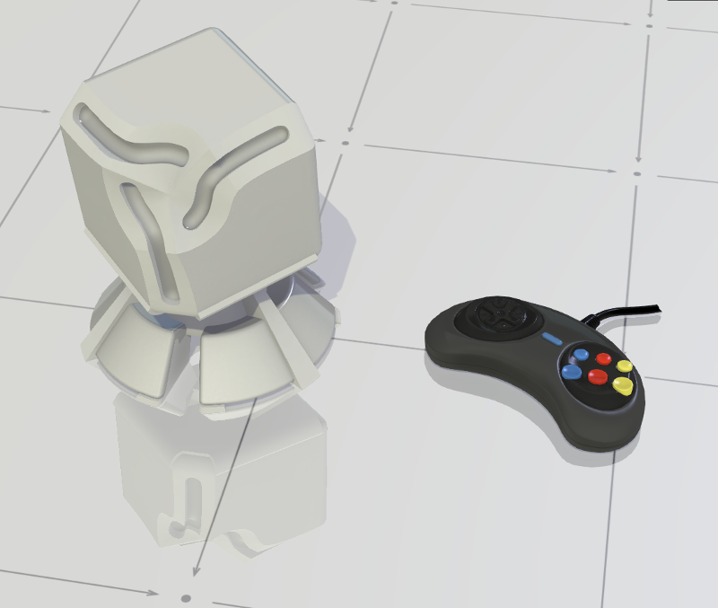
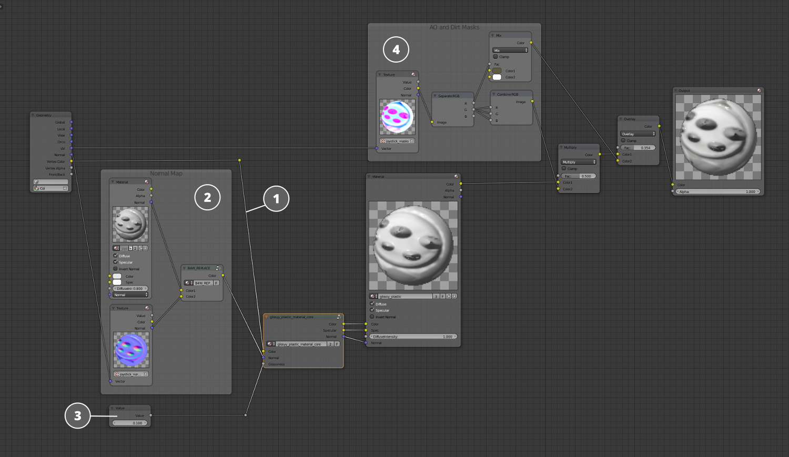
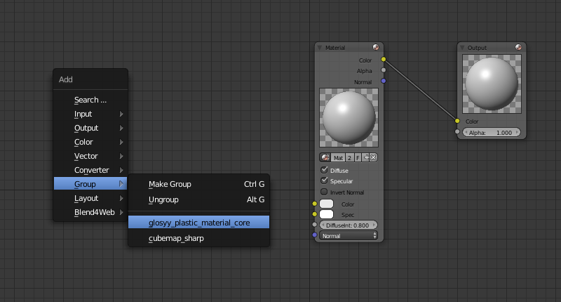

Библиотека материалов¶
Содержание
Библиотека материалов – это библиотека, где пользователь может найти базовые и наиболее часто используемые материалы для использования в своих проектах или для создания на их базе своих собственных материалов.
При создании нового проекта возможно перенести библиотеку материалов в новый проект автоматически и подключать материалы оттуда.

Для этого при создании нового проекта при помощи менеджера проектов надо выставить галочку Use Material Library. Тогда вся библиотека материалов будет автоматически скопирована в папку /assets/material_library/ в каталоге нового проекта.
Примечание
Библиотека материалов может использоваться и в уже существующем проекте. Для этого достаточно скопировать файлы из папки /blender/material_library/ в каталоге SDK в папку /assets/ в каталоге проекта. После этого файлы материалов можно подключить к файлу сцены и использовать материалы в сцене.
Примечание
Как и любые объекты, материалы можно добавлять к сцене с помощью команд Link и Append. Разница между ними описана здесь.
Структура библиотеки¶
Все материалы структурированы по папкам (по группам материалов) и отдельным файлам (по материалам). В каждом blend-файле находится один базовый материал (например bronze) и материал на дополнительном объекте (например happy_recon_bronze), который позволяет демонстрировать материал на характерном объекте, ассоциирующимся с данным материалом (например: материал золото — золотой слиток).

Структура материала¶
{kind=link}
Ядро материала
Нода
Material, в которую подается вся нужная информация из ядра материала.Карта нормалей, которую при необходимости можно подключить к любому ядру материала.
Текстура с необходимыми дополнительными масками для задания корректного поведения материала на поверхности объекта. В большинстве материалов использованы следующие маски:
Карта затенения
Карта загрязнения
Карта потёртостей
Карта патины
Не все из них используются в каждом материале, только если требуется для создания корректного поведения того или иного шейдера.
Нода
Mapping, регулирующая параметры UV-развертки.Ноды
RGB Curve, позволяющие корректировать те или иные маски прежде чем они будут поданы в ядро материала.Специфическая настройка карты спекуляра после ноды
Material, для создания разной степени размытости блеска с использованием масок.Запеченная карта затенения добавляется к шейдеру перед нодой
Output.Нода
Output
Ядро материала¶
Основная нодовая группа, которая содержит нодовую структуру, формирующую шейдер. Это по сути и есть сам материал в его чистом виде, все сложные взаимодействия нодовых узлов упакованы в одну группу для удобного использования. Для её настройки нодовая группа имеет специальные входы и выходы, а так же специфические вводные параметры.
Пример использования¶
{kind=link}
Здесь вы можете видеть пример настройки материала пластика на специальном демонстрационном объекте без использования текстур, подключаемых в ядро материала.

Базовый цвет задан простой нодой
RGB Colorи подан на вход в ядро материала.В данной реализации материала не используется никаких карт нормалей и во вход
Normalподаны данные нормалей с геометрии.В данном ядре материала присутствует специфическая настройка, регулирующая уровень глянца на материале. В данном случае значение выставлено на максимум.
Также в материале используется запеченная маска затенения.
Теперь рассмотрим использование того же материала на другом объекте - пластиковом джойстике.
{kind=link}
В качестве цвета здесь используется вертексный цвет с геометрии объекта.
Для геометрии джойстика была запечена карта нормалей, которая подана во вход
Normalядра материала.Уровень глянца объекта настроен на меньшее значение.
Вместо масок демонстрационной модели используются маски (загрязнения и затемнения), запеченные специально для модели джойстика.
Примечание
Следует заметить, что содержимое ядра материала не менялось и не корректировалось под другую геометрию.
Добавление материала в сцену¶
Добавление целого материала¶

Выберете в меню File пункт Append или Link, в зависимости от того что вы хотите сделать - добавить объект полностью в ваш проект с возможностью изменять его (в этом случае выберите Append) или только прилинковать без необходимости изменений (в этом случае выберите Link).

Далее выберите интересующий вас .blend-файл с материалом из директории /blend4web/blender/material_library/

Выберите сам материал в списке материалов и нажмите Append from Library или Link from Library. Теперь материал добавлен в вашу сцену и вы можете применить его к любому из объектов.
Добавление только ядра материала¶
Если вы хотите добавить только ядро материала, а остальную часть настроить самостоятельно, при линковке или добавлении вместо материала выберите NodeTree и, выбрав интересующую вас нодовую группу, нажмите Append from Library или Link from Library.
{kind=link}
Теперь эта нодовая группа находится в списке нодовых групп которые вы можете добавить в свой материал через Add=>Group в окне Node Editor.
{kind=link}
Примечание
У любого материала есть свои требования не только в отношении определенных масок и текстур, но и вертексных цветов и UV-разверток.